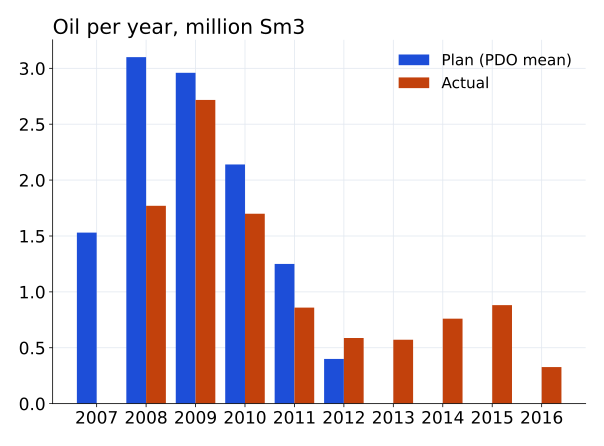
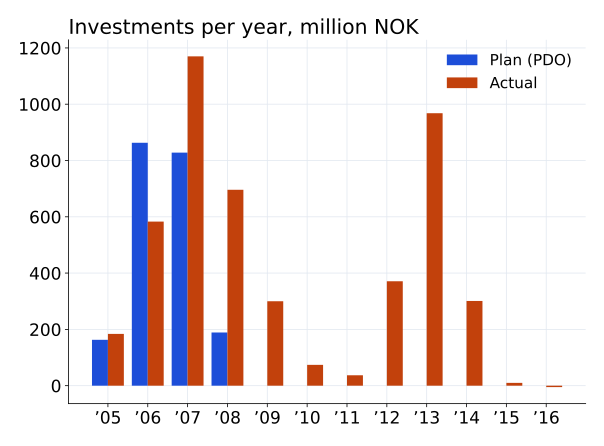
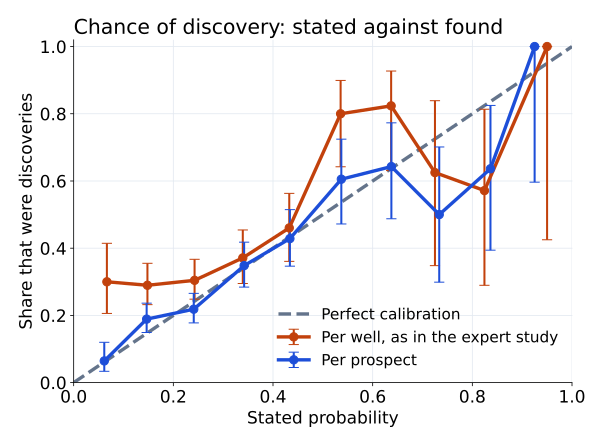
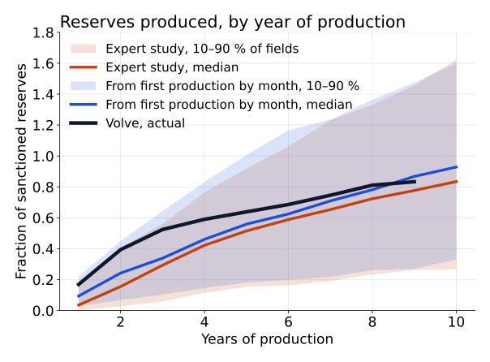
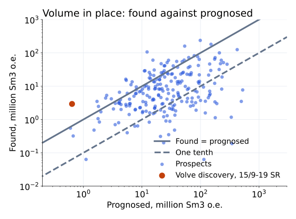
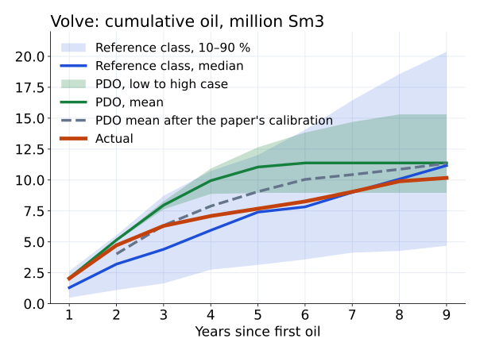
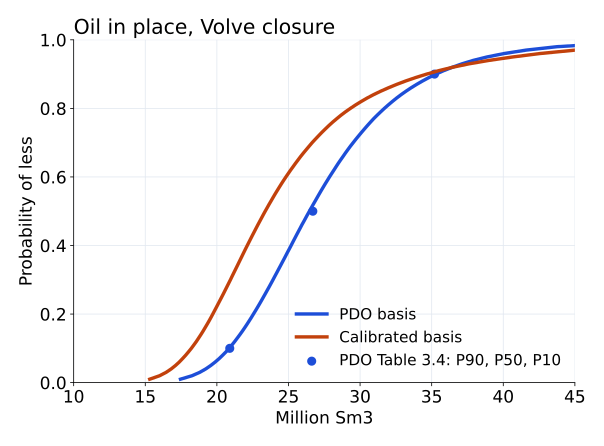
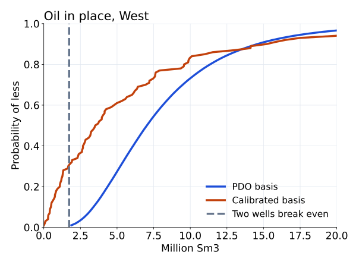

ref-class-concept-select
Reading field-development decisions with the outside view: five agents on the open Volve data.
Result · the plan against the outcome
doc · agents/doc/out/volve-pdo-vs-actual

Oil 11.4 → 10.2 million Sm3; first oil 11 months late
Investments 2 043 → 4 689 million NOKResult · the expert's study, reviewed
rcf · agents/rcf/out/expert-study-review

Counted per prospect, the chance of discovery is right: 242 expected, 244 made
Counted from first production, the median field has produced 0.09 of its reserves after a year, not 0.04Result · the record of the shelf
rcf · agents/rcf/out/volve-rcf-study

Discoveries hold 0.33 of the prognosed volume; stated ranges hold 31 %, not 80 %
Volve: below the plan's low case in years 2–6, inside the class range every yearResult · a recalibrated volume basis
dmx · agents/dmx/out/volve-concept-basis

Central estimate 26.5 → 23.4 million Sm3; below the plan's low case 10 % → 30 %
Chance that the West wells do not pay: 0.7 % → 31 %The 2005 plan and the modified plan
What changes
| 2005 plan | Modified plan |
|---|
| Concept | Leased jack-up, storage vessel, gas to Sleipner A | Unchanged |
| Volume basis | 27.5 million Sm3 (mean) | East 19.2 committed; West 0.5–15.2 as an option |
| Wells at sanction | 3 producers, 3 injectors | 2 + 2; western pair held back |
| West | Drilled with the rest | Pilot first; drill the pair above 1.7 million Sm3 |
| Capacity | 9 000 Sm3/d | Unchanged |
| Reserves told to owners | 11.4 | about 10, low case 7.9 |
Where it stands
Done
- Data layer, rules, checks
- Plan and discovery report converted and analysed
- Simulation deck runs in OPM Flow
- Reference classes built and back-tested
- Volume basis recalibrated
Started
- Modified plan, on the plan's own value figures
- One decision: the wells for the West
Next
- Decision model with price, cost and options
- Which wells drain which area
- Cost reference class
- Simulation of the modified plan